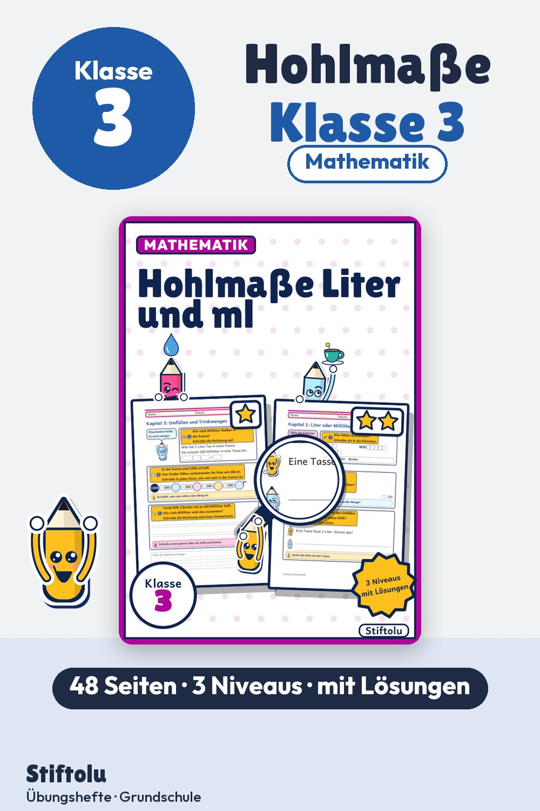

Werbung · Übungsheft von Stiftolu
Hohlmaße in Klasse 3: Liter und Milliliter schätzen, ablesen, umrechnen

Liter oder Milliliter? Zuerst schätzen die Kinder Gefäße, danach lesen sie am Messbecher ab, zuletzt wird umgefüllt und gerechnet. 48 Seiten für Klasse 3, mit 3 Niveaus, Lösungen und Handreichung, erhältlich auf eduki.